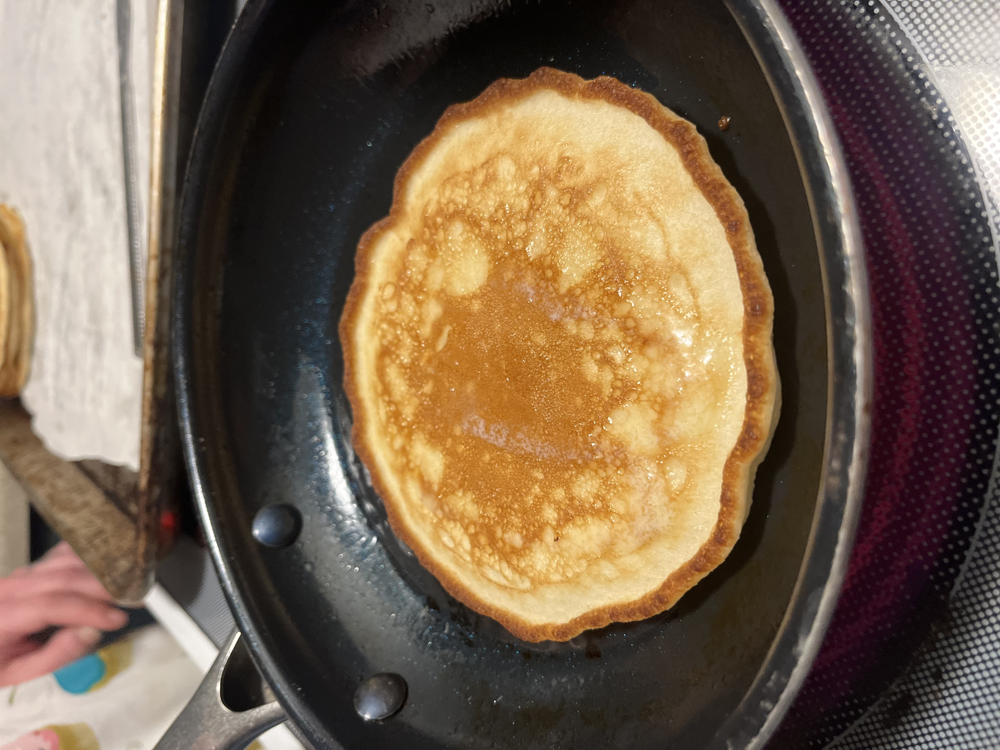

Flapjacks, or Pancakes if you prefer are delicious fluffy cakes that go well with butter and syrup.
Often these delicious cakes are inexpensive to make, and very filling. We made this as the only item for dinner on the night in question, and I was stuffed when dinner was finished.
The best way to eat these guys is fresh, but if you need to keep them warm while you make other food, or clean up the dishes you've made, a great way to do that is to preheat your oven to 350deg F, then once it's heated turn the oven off and set your Flapjacks inside. They will stay warm without drying out, and you can have dinner with a clean sink.
The bottom line is that we found the most success with Flapjacks by timing them and cooking them with a consistent amount of heat. REALLY let your pan heat up, or you will have inconsistent cakes.
You will be mixing ingredients in two separate bowls. Be sure to keep the wet ingredients separate from the dry ones.
Hope you enjoy!
